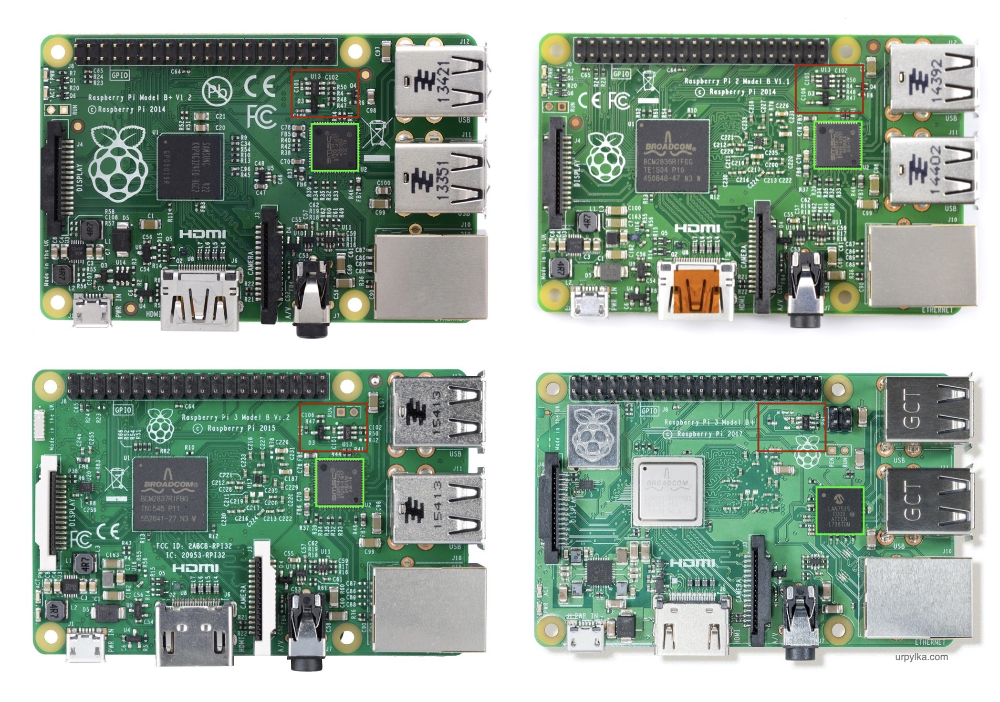
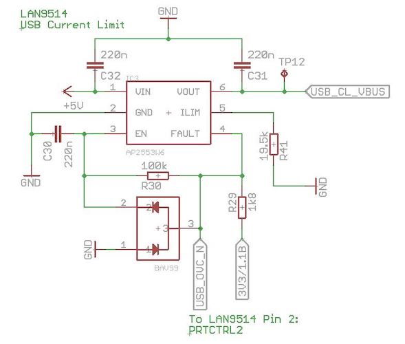
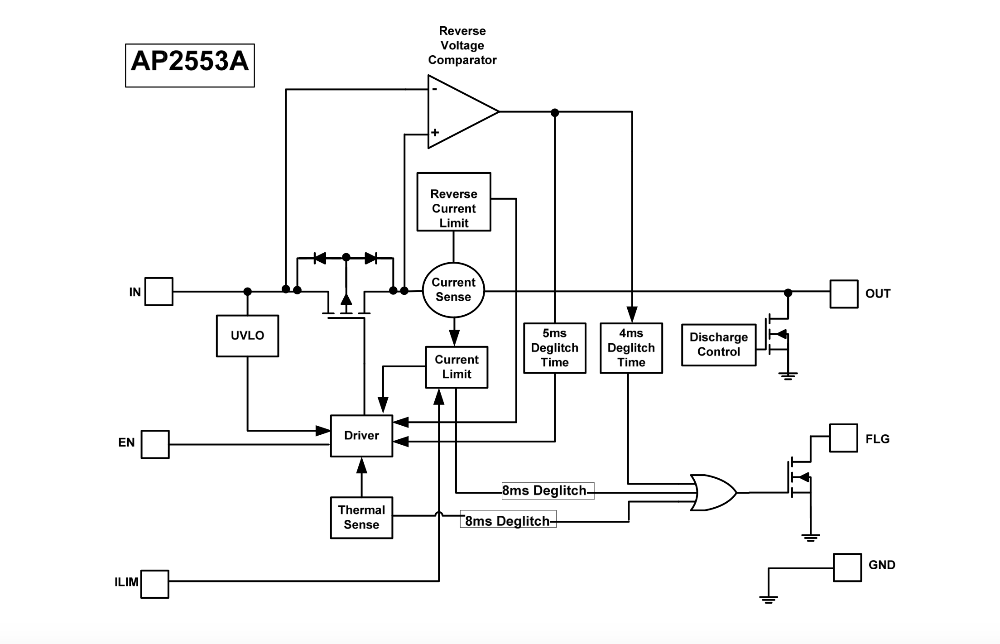
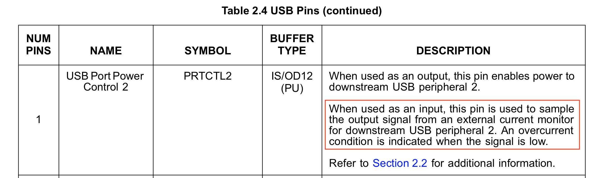
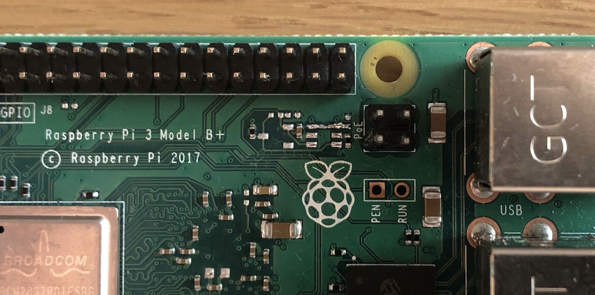

Programming, robotics, traveling
Питание USB портов Raspberry Pi
USB порты Raspberry Pi имеют ограничение по току (в среднем от 1.2 до 2А, точную информацию смотрите в спецификации к конкретной плате). При подключении сотовых модемов, Wi-Fi модулей и других потребителей требущих от 2х и более ампер требуется внешнее питание. Производитель предлагает использовать USB-HUB со внешним питанием. Однако это решение подойдет не для всех, например, при использовании Raspberry Pi на дроне (где масса и размеры критичны). Ниже изложу устройство ограничителя тока и обход ограничения по току.
Устройство
Рассмотрим платы Raspberry Pi модели B и B+ – платы со встроенным Ethernet и USB портами. Структурно все платы идентичны за исключением наличия Wi-Fi модуля у последних двух.

Raspberry Pi 4B не включена в обзор ввиду отличий по схеме.
На рисунке красным я выделил схему питания USB, а зеленым контроллер LAN9514 USB-HUB'а со встроенной сетевой картой. По сути все порты подключены к этому контроллеру, а он в свою очередь (по USB 2.0 шине) к основному вычислителю. Рассмотрим схему питания выделенную красным.
На официальном сайте (на странице продукта Raspberry Pi 3B+ по ссылке «schematic diagrams») представлена следующая схема:

Включите светлую тему сайта для корректного отображения схемы в PDF формате.
Но в ней нет части питания USB нагрузки. На схеме даже указано “Reduced”. Оказывается, что некоторые части схемы находятся под NDA (обсуждение здесь).
В обсуждении, я нашел ссылку на еще одну схему Raspberry Pi c чуть более подробной информацией (но такое ощущение, что она от самой первой Raspberry Pi).
Однако в интернете можно найти следующую схему (LAN9514 USB Current Limit):

Из схемы можно увидеть название микросхемы отвечающей за ограничение тока – AP2553W6, ниже представлен фрагмент структурной схемы из её даташита.

Исходя из того, что в случае перегрузки FLG (FAULT) соединяется с землёй, а на пин USB_OVC_N не содержит токоограничевающего резистора, можно сделать вывод, что он используется как сигнальный. Для оповещения о перегрузки по току контроллера LAN9514 (для отключения шин данных).
Соотвествующее подтвержение можно найти во фрагменте из даташита LAN9514:

Полагаю аналогичное подключение и с
LAN7515на Raspberry Pi 3B+.
Модернизация схемы
Как видно из схемы выше: используя AP2553W6 програмно невозможно отключить ограничение по току. Решений два:
- Выпаять
AP2553W6и соединить IN - OUT пины перемычкой; - С вывода 5V (GPIO) кинуть провод на выход 5V в USB порту.

На сколько я смог понять из изучения плат: Raspberry Pi не содержит встроенных 5V стабилизаторов напряжения, а значит в случе перегрузки по току, выгореть может только дорожка или внешний источник питания. У последних защита обычно встроена, однако позаботиться о не возникновании КЗ, после удалении защиты, всё же стоит.